五天的行程 一家四口(其實小愛沒什麼特殊喜好應該排除不說)各有所好 媽媽期待的是人生第一個百岳-石門山還有落X山莊 徹爸期待的是阿嬤照相館和磯崎國小的比賽開始棒球之旅 而阿徹最期待的則是到海邊戲沙
雖然阿徹之前說過如果要去爬山不要先跟他說 但在第一天出發往南投的路上 我們還是好好跟他詳細講解接下來五天的安排 也許小子出門太高興 也許小子聽到有去海邊太興奮 對於爬山雖然唸著不喜歡但卻也答應我們得欣然接受 我們說’我們讓你去喜歡的海邊 海洋公園 那你也要陪我們去我們喜歡的山上’ 我甚至很慎重的跟他解釋為什麼這次要去爬石門山 因為這是我跟徹爸想給阿徹的幼稚園畢業紀念 哈! 這對爸媽很好笑 既然要給人家當作紀念的還篇挑人家不愛的 呵呵! 阿就想要讓阿徹在幼稚園畢業前去做一件具挑戰性的事ㄇㄟ 百岳很有紀念價值吧! 而且比起爬玉山 花東單車縱騎或是單車環島 登石門山這個可以1-2小時間內完成又具意義的安排不是很棒嗎?!(都爸媽在講) 而且從南投上合歡山再從花蓮下來 也算是衡走台灣 繞過半個台灣了 (可惜中橫斷了已經不能自豪的說走過中橫了) 怎麼想都覺得媽媽這個南投.合歡山.花蓮的安排真是別具意義阿!!(自己屁股都翹起來了)
第一天在南投的行程與住宿都是為了第二天一大早的上合歡山 而第二天早上在清靜的停留也是為了逐漸適應海拔以免高山症發生而不得不做的停留 所以徹媽的遊記決定從第二天的合歡山開始寫起………..
第二天早上在清靜停留2個多小時 晃了瑞士小花園 解決了午餐也先犒賞阿徹小愛們喝養樂多吃烤魷魚絲後 (接下來的24小時是沒有商店更別說7-11可以讓我們不愁吃的) 12點多我們離開清靜 順著攀升的公路往我們此行的目標”石門山”前進 車子越走看到的山頭林像越完整 天也更加的藍 而雲好像就在前方等著我們一樣….
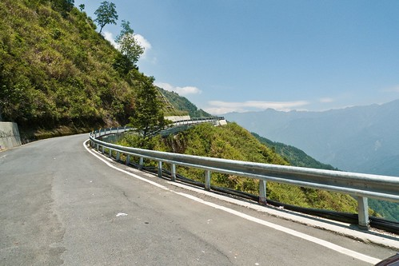
回頭看見我們曾經過的清靜 還是覺得清靜太過度開發了 其實這回本來有考慮是否第一天直接上清靜住一晚這樣隔天更方便去走合歡山群系 雖然清靜真的很夯而且還夯很久 但我一直不是很愛清靜 覺得太過度開發且民宿都太賣sense 而且還一家賣的比一家貴 因此最後還是選擇去已經去過好多次的桃米
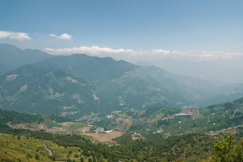
五六月的高山正是百花齊放 充滿美麗色彩的時候
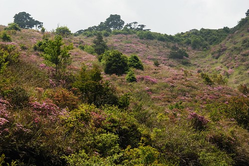
從埔里買上來的洋芋片因著高海拔在還沒到合歡山前就已爆破 “繃”的一聲巨響讓阿徹好high 也感受到小紅已經”爬”到很高的地方了嚕
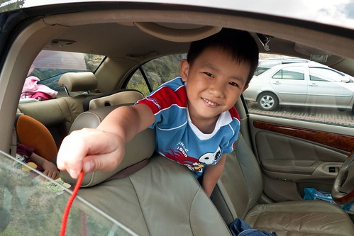
本來很期待中橫沿路的高山藍天的 尤其是全台最高公路點武嶺那的VIEW 可是車子進入太魯閣國家公園地標後 尚未到達武領前就已天雲變色
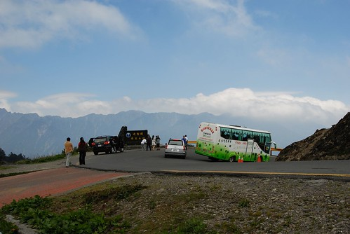
“大”雲壓頂 藍天不見了….嗚嗚嗚… 這跟上一張照片才不過相差10分鐘說 不過媽媽還是滿懷雄心壯志的想要完成合歡山主峰的”健行”
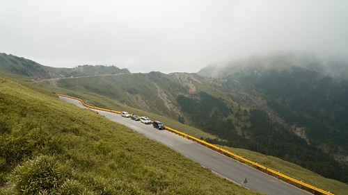
出發前一星期本來我還一直把合歡東峰納入行程安排的 但是幾經考量東峰往返3小時左右的路程加上路似乎真的很陡峭 最後媽媽只好接受事實的 不貪心的把東峰給刪除了 但又不甘願只去一個石門山 所以就把合歡山主峰給加入了 想說合歡山主峰有產業道路到達 應該可以走的輕鬆容易吧
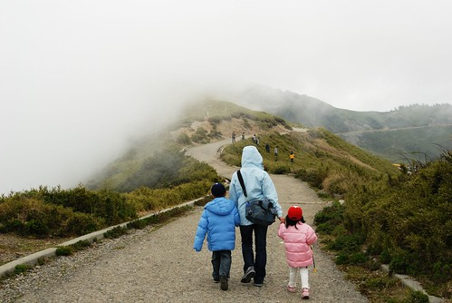
但是海拔3275上的產業道路竟然還是恐怖阿….. 走個10分鐘後就開始喘了 而不愛爬山的阿徹也開始嘟嘟嘴 走的心不甘情不願了
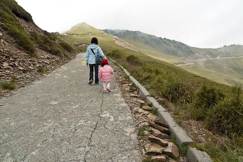
這時候的小愛當然又表現出她很愛爬山的樣子
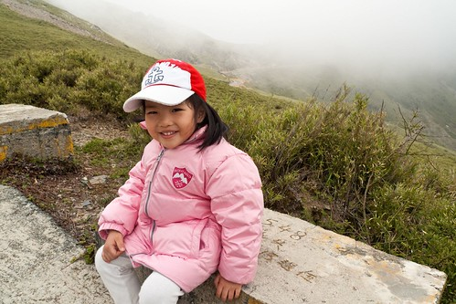
小愛還三不五時念著”爬山是對我們很好的運動 對不對?!”
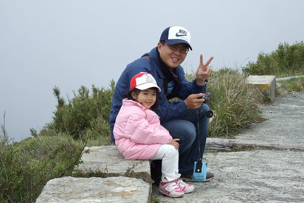
反正每次在山上阿徹都變成了一條蟲 而小愛則順勢的成了一條龍
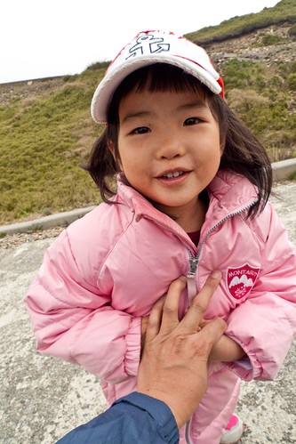
走了半小時後 高山上的些許不適加上阿徹帶來的壞心情 越走腳步越覺得沉重 雖然距離主峰還剩1公里多的路程(我們可能才走沒幾百m吧) 但有點擔心我們無法撐到終點 且考量時間上可能來不及走這回的主要目的石門山 最後還是半途就折返了
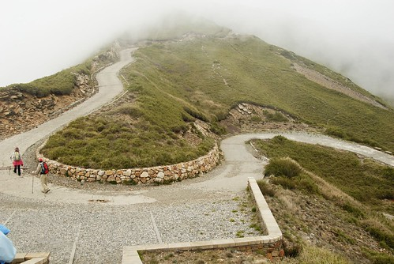
希望來日還有機會再攻!
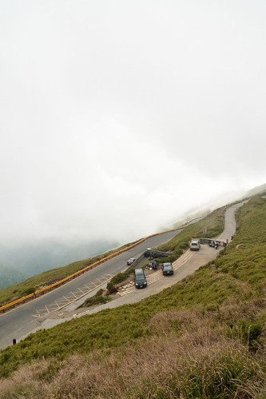
離開合歡主峰登山口沿著台14甲 經過合歡山莊往石門山登山口前進
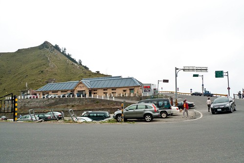
(引述) 石門山位於合歡山邊，標高3237公尺，是排名第66名的百岳， 石門山攀登十分容易，但之所以被列名為百岳之一，主要因為百岳的評選標準主要重視兩個標準， 一個是必須超過3千公尺、另一個就是最好山頂有個明顯的三角點，而石門山剛剛好就符合這兩個條件。
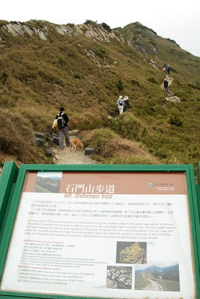
(引述) 攀爬石門山，步伐不用艱辛，但卻要很珍惜。 因為從登山口直到山頂大概花不了2千步，一個不留神，人就已經攻頂沒得走了。 所以將石門山稱為最容易親近的百岳
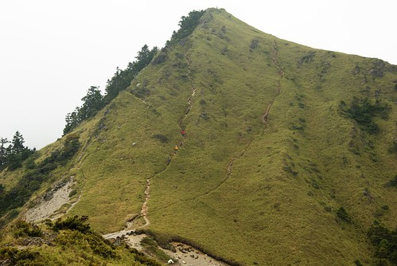
聽起還好像真的是座”很”容易的百岳阿 相較於其他百岳是真的最容易啦 但海拔3000公尺以上會發生什麼事(高山症就像個不定時炸彈 擔心他隨時引爆)誰都不知道

鑒於阿徹在合歡主峰的沿路抱怨及完全不佳的情緒影響大家 在進入石門山歨到前面我”嚴重”的警告他 既然行前都已經答應我們要一起上山走路那就該遵守諾言 而且這山是一定要走完的 不管他如何不喜歡就是一定得走 這是我們旅行中的互有所求 應彼此配合接受的
小子的臉有夠臭吧 在我落下狠話後我就不再多說 各自努力走自己的
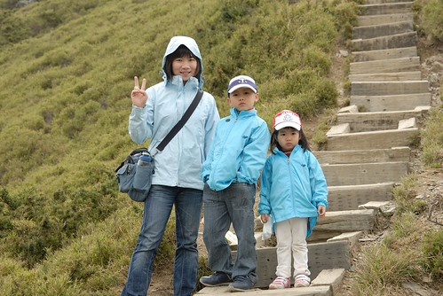
雖然是最簡單的百岳 但是看到的VIEW也很不簡單 (沒有藍天背景可惜了點)
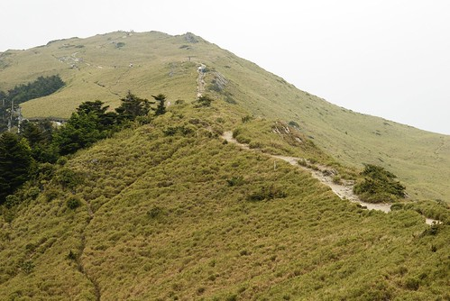
相較於阿徹的澳嘟嘟(不過起碼不敢吭聲 有比較認命的走) 小愛又是興致高昂的哩…
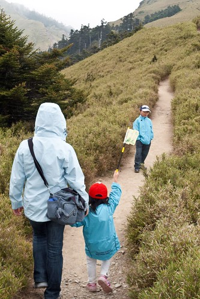
阿徹哥哥是無奈的手插口袋 小愛則是”愛學”的跟著耍痞 只是愛的外套是嬰兒版的沒口袋 只好退而其次的插裡頭那件 就是堅持要插才酷…
最後一個上坡轉折處休息的時候 阿徹竟然就這麼給他躺在路上休息了起來
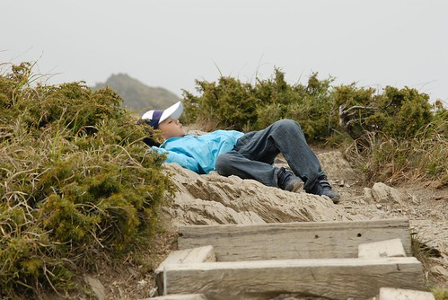
氣色看起來不是太好的樣子 害我開始擔心是不是高山症發作了
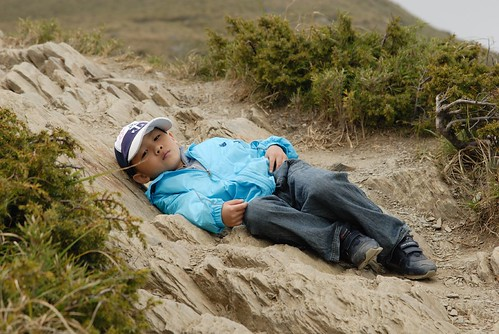
雖然徹爸覺得阿徹是心情問題 但我想可能應該加減有點高山問題發生吧
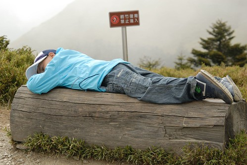
小愛又是愛學的跟著躺 其實她精神可好的哩
回頭看我們走過的路 看起來不像只有2000歨阿 莫非寫那段文字的那個人身長180 每一步伐都比我們大上一倍阿
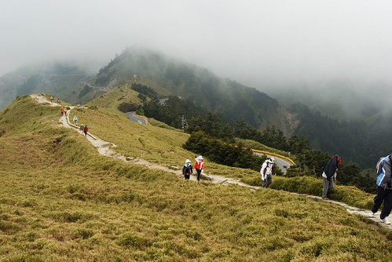
總算總算我們攻上石門山的三角點了 總共費時40分鐘左右 只是山頂上一片霧茫茫 什麼山什麼碐線都沒看見 本想跟三角點照張相之後就要下山了 因為山上真的好冷阿…. 可是偏偏同時間有一團30-40人的阿公阿嬤登山團抵達 看著她們一下個人照 一下團體照 一下兩人照一直照個不停 我們只好冷個不停的等了她們20分鐘左右 挖勒….
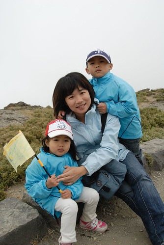
終於達成媽媽此行的期望 阿徹總算應媽媽要求的露出笑容了 問他登上山頂有什麼感覺 (我是期望他說什麼了不得的話的) 結果他的答案是”好冷 真的好冷喔…..” 這是他唯一的感想
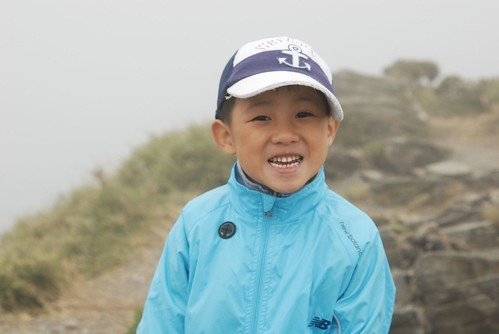
幸好冷呼呼的等了那麼久之後 那團阿公阿嬤們把她們帶上來拍照用的那張紙留在原地 讓我們也可以留下這值得紀念的紀錄照片
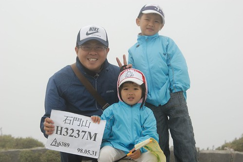
YA! 其實登上百岳最高興的是媽媽自己吧
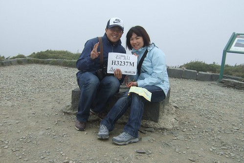
小愛對於登上百岳這事應該沒有太深的感受 但在健行的過程中卻超怡然自得 或許步伐較小速度慢了些 但是在這海拔3000公尺的高山上依然可以面不改色的整路說說唱唱 還是忍不住要說”小妮子狠角色阿!” (旁邊阿徹那顆垂放的頭 兩相對照下有夠好笑的)
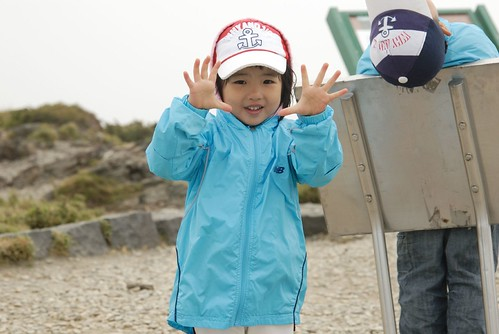
人潮散去後 山頂恢復寧靜 只剩登上百岳的喜悅留在每個人的心頭上
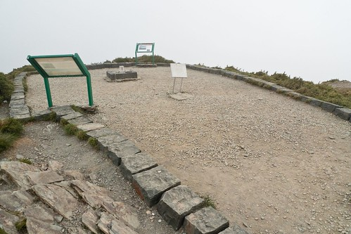
虛榮感滿足後 我們也要啟程下山了…
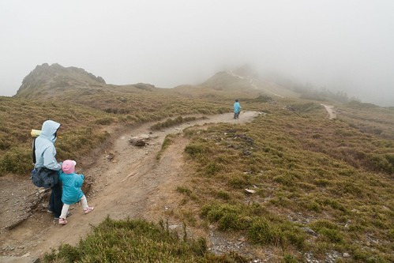
霧更濃了 眼睛所見都是白茫茫一片
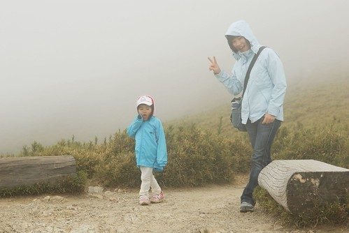
也許沒有見著藍天是這回登上石門山最大的遺憾 但山煙飄邈不也是另一種美感 只是真的好冷喔………….
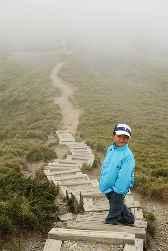
下山路上 阿徹一馬當先 應該是急著想離開他的夢靨之地 走完這山接下來的旅程中再也沒有考驗他的地方了 可以如魚得水了
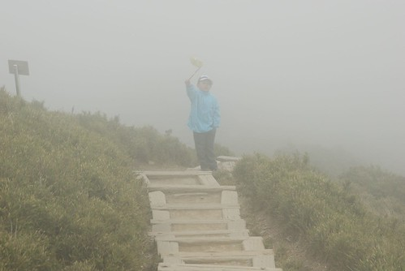
等我跟小愛慢慢走的 落了阿徹她們10來分鐘回到登山口時 徹爸她們已經熱好車 甚至享用著那包爆破的洋芋片 不知道是太久沒吃洋芋片還是真的太冷太累 四個人都覺得洋芋片好好吃喔…. 媽媽又忍不住跟阿徹說了”你看辛苦之後 東西有沒有特別好吃…” 這就是辛苦之後的收穫阿!
(回到車上後的阿徹又一臉皮樣 我想是我多疑了 小子應該沒有高山症吧 ㄘㄟ… )
徹媽碎碎唸: 最近為了合歡山是否該從百岳中除名 山友們討論的沸沸洋洋 個人倒是覺得如果每個上山的人都可以愛護環境 保護山林 這麼個容易可以讓人到達親近的百岳 對我們這種無法上那種所謂”像樣”的百岳人來說 卻是一個可以實現登上百岳夢想的唯一方式之一 如果登山的人不懂得愛護自然 破壞林態 甚至把垃圾留在那常人難以上的高山上 那麼百岳不也只是他們追求虛榮的一種方式之一而已…
前一陣子徹爸給我看了一篇Mobile上很夯的一篇有關一個外國女生在塔塔加單車比賽的英勇事蹟 大家討論著他的配備有多麼陽春簡單 但騎的多麼輕鬆愜意且成績優異 有位車友分享他當時難得的可以跟那位外國女生併騎聊天的內容 原來那位外國女生是瑞士人 是來台灣學習中醫的 那位外國女生跟台灣車友說”台灣的山真是美麗” 台灣車友訝異的問”瑞士的阿爾卑斯山應該更美麗吧” 外國女生說”台灣的山跟瑞士的山是完全不一樣的美麗 “ 當全民熱衷於出國旅遊的同時 是否也應該像這位外國友人一樣多親近我們自己台灣的高山 起碼多留意體會台灣的好山好水….